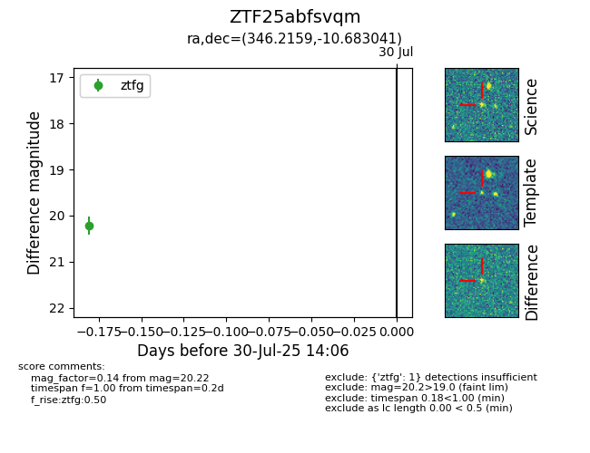

Target ZTF25abfsvqm at 2025-07-30 14:06, see:
FINK: fink-portal.org/ZTF25abfsvqm
Lasair: lasair-ztf.lsst.ac.uk/objects/ZTF25abfsvqm
ALeRCE: alerce.online/object/ZTF25abfsvqm
alt names
ZTF25abfsvqm (ztf,fink)
coordinates:
equatorial (ra, dec) = (346.2159,-10.68304)
galactic (l, b) = (61.0546,-60.02278)
photometry
last ztfg=20.22
1 ztfg detections
